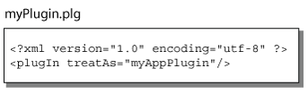
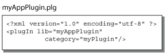
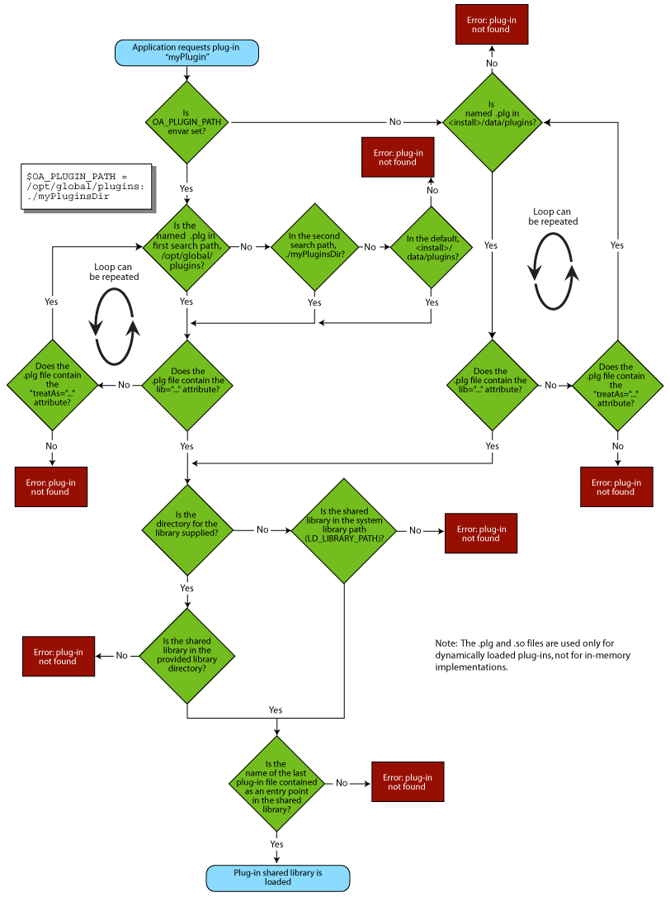

|
 |
 |
||||||
|
|
|
||||||
OpenAccess uses plug-ins as the mechanism for customizing certain OpenAccess features. Plug-ins use dynamically loaded shared libraries to select a customized implementation at run-time without requiring an application
OpenAccess provides the following interface classes that you use to implement plug-ins.
| Type of Plug-in | Primary Interface Classes | Category Name | Related Documentation |
|---|---|---|---|
| Design Management | IAccessControl ILib ILocking |
oaDMSystem | OpenAccess Libraries and Design Management |
| Design Management: Working with Library Definition Files |
ILibDef ILibDefAccess |
oaLibDefSystem | |
| Text bBox Calculation | IText ITextInvalidate |
oaTextSystem | How to Write a Plug-in to Calculate Bounding Boxes for Text |
| Pcell Evaluation | IPcell IPcellGen |
none defined | How to Write a Pcell Evaluator Plug-in |
| Eval Text Evaluation | IEvalText | none defined | IEvalText Class Reference |
| Region Query | IRegionQueryPlugMgr | oaRQSystem | Region Query Plug-In Architecture |
| Version Control | IVersionControl IVCSystem |
oaVCSystem | Plug-In Class Index |
| Change Management | IExport ITracking |
oaCMExportSystem oaCMTrackingSystem |
How to Write Change Management System (CMS) Plug-Ins |
Important: The ICompatibility class provides a mechansim that any plug-in can use to verify whether or not a version of OpenAccess is compatible with the plug-in.
This document explains the steps for writing a plug-in at a high level. After reading this document, refer to the related documentation for the plug-in of interest (in the table above).
OpenAccess defines a set of interfaces that serve as links to application functionality. An interface is a set of virtual C++ member functions grouped in an interface class. An application overrides these virtual functions to implement some specialized functionality.
All plug-in implementations must include the following:
A plug-in factory creates instances of a particular plug-in, and each plug-in must have at least one factory. OpenAccess provides the templated class oaCommon::Factory<T>, which applications can use to define a factory object for a plug-in. An application needs to instantiate only one of this class in the shared library with its plug-in class as the template parameter.
For example, if an application implements an object using the class name myPlugin for the interfaces, it declares a static member in the plug-in class as follows:
oaCommon::Factory<myPlugin> myFactory;
Then, use the following code to construct a static member of myPlugin:
oaCommon::Factory<myPlugin> myPlugin::myFactory("myPlugin")
The string argument "myPlugin" in the factory constructor is the classID for the plug-in. When the oaCommon::Factory<T> template creates a factory, the classID for the plug-in is automatically placed in the OpenAccess plug-in factory table. OpenAccess uses this classID as an identifier to find the factory for the plug-in.
Each plug-in shared library must implement the entry point function getClassObject. This function must have the function prototype:
extern "C" long getClassObject(const char *classID,
const Guid &interfaceID,
void **ptr);
In a typical plug-in, the getClassObject need only make a call to the FactoryBase::getClassObject as follows:
long
getClassObject(const char *classID,
const Guid &interfaceID,
void **ptr)
{
return FactoryBase::getClassObject(classId, interfaceID, ptr);
}
The FactoryBase::getClassObject function traverses the OpenAccess plug-in factory table to find the factory identified by classID. It returns a pointer to the factory that is found. Note that only one getClassObject entry point function is required for each shared library, regardless of the number of plug-ins being served from that library.
A registration file is required for each plug-in. The registration files for the plug-ins supplied by OpenAccess reside in the installation data/plugins directory. Registration files must be of the form of <plug-in-name>.plg. For example, the plug-in registration file for OpenAccess Turbo Design Management System is as follows:
<install_dir>/data/plugins/oaDMTurbo.plg
Plug-in developers can add their own plug-in registration files to the data/plugins directory. Alternatively, plug-in registration files can be placed in any location specified by the OA_PLUGIN_PATH environment variable. This environment variable specifies an ordered list of locations that OpenAccess should search for plug-in files. OpenAccess uses the first matching file found. By default, the data/plugins directory is searched last.
The XML format is used for plug-in registration files. For example, the contents of a plug-in registration file for the myPlugin plug-in is as follows:
<?xml version="1.0" encoding="utf-8" ?>
<plugIn lib="myPlugin"/>
The value of the lib attribute, specified with the plugIn element, is the base name of the shared library for this plug-in. OpenAccess constructs a platform appropriate filename from this base name. In the myPlugin example, the library name on the Sun platform would be libmyPlugin.so, and the library name on the Win32 platform is myPlugin.dll.
In addition to the root name of the library, a plug-in registration file can also include a directory attribute to specify the path to the plug-in shared library. The path can be an absolute path or a path relative to the .plg file. For example, for a plug-in located at /usr/local/lib with the root name myPlugin, the registration file would contain the following:
<?xml version="1.0" encoding="utf-8" ?>
<plugIn lib="myPlugin" directory="/usr/local/lib"/>
Unless the directory attribute is included in the plug-in registration file, the system loads the shared library by using the library search path (such as the LD_LIBRARY_PATH on UNIX systems). If the directory attribute is included, the path to the library is obtained as the path to the directory and the shared library name is constructed as described previously. On UNIX, the tilde is not interpreted as a home directory. On Windows, full paths must start with a drive letter, a colon, and a back slash. Paths that start with a letter, a colon, and a character other than a back slash, are not supported on Windows.
The string values in a registration file are always enclosed by a pair of double quotes, and the back slash (\) must be used as an escape character if the double quote is used literally as part of a string. The escape character itself is ignored, and the next character is used literally without interpretation. As a consequence, a double quote character is represented by preceding it with a backslash (\”), and a backslash character is represented with two backslashes (\\). Therefore, the string to represent the directory attribute on the Windows platform must have double backslash characters. For example, the string C:\work\designs must be represented in a plug-in registration file as:
"C:\\work\\designs"
Once the shared library is loaded, it finds and calls the entry-point function getClassObject with the name of the plug-in to get a pointer to that plug-in's factory. The factory is then used to create an instance of the plug-in.
You can designate that your plug-in should be the default for a category of plug-ins. Edit the <install_dir>/data/plugins/<plugin_category>.plg file to specify your plug-in name with the treatAs attribute. For example, the following .plg represents a category of plug-ins called myPlugin.

The treatAs attribute points to myAppPlugin, which is to be used as the default for this category of plug-ins.

If you are using the OA_PLUGIN_PATH environment variable to point to a plug-in registration file outside the data/plugins directory, copy the <plugin_category>.plg file to the directory containing your .plg file, then specify the name of your plug-in for the treatAs attribute.
As mentioned previously, applications can look for plug-ins in the default location that contains the OpenAccess plug-ins, or they can use the OA_PLUGIN_PATH environment variable for locating plug-ins.
The following flow chart demonstrates the sequence of events that occurs when an application receives a request to load a plug-in.

OpenAccess includes numerous examples that demonstrate good coding practice. The example code is found in directories beneath <install_dir>/examples/oa. Several code examples for plug-ins are available:
Another example is provided at <install_dir>/oa/plugIns/VCSample. This is an example for a version control (VC) system plug-in. The sample provides the boiler-plate code required to create a working VC system that can be plugged into an existing design management (DM) system such as DMTurbo or DMFileSys. The DM system can then present the VC interfaces as though both systems are one unit. The implementation details of this are presented in the example code.
You can copy the example plug-in code to a development area and recreate the functions that are marked "VC System Developers: re-implement this function." Changing the names of the classes is optional, but changing the name of the plug-in is mandatory. You change the name of the plug-in by changing the name of the oaVCPlugSample.plg file. The root name of this file corresponds to the name of the plug-in. Inside the file, the value in quotations is the root name of the shared library of the plug-in. For example, a VC system called MyVCSystem built in a library named libMyVCSystem.so (on Solaris) would ship with a file called MyVCSystem.plg , which contains the following line of text:
<plugIn lib="MyVCSystem"/>
The primary interface that this plug-in implements is IVersionControl, which is the interface that OpenAccess uses to interact with the version control system. The comments in the oaVCPlug.cpp file help identify the purpose of each of these functions. When implementing the following functions, it is the responsibility of the version control system to insure that none of the affected files are locked by another process, and that once the action is started no locks are granted to other processes until the action is complete.
IVersionControl::makeEditable()
IVersionControl::cancelEdit()
IVersionControl::commitEdits()
IVersionControl::setControlled()
IVersionControl::unsetControlled( )
Copyright © 2001-2010 Cadence Design Systems, Inc.
All rights reserved.